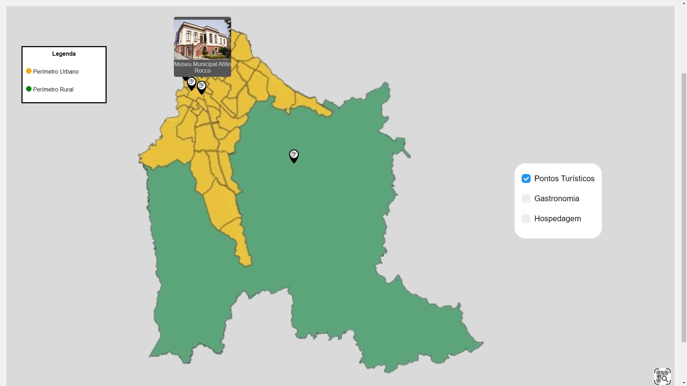
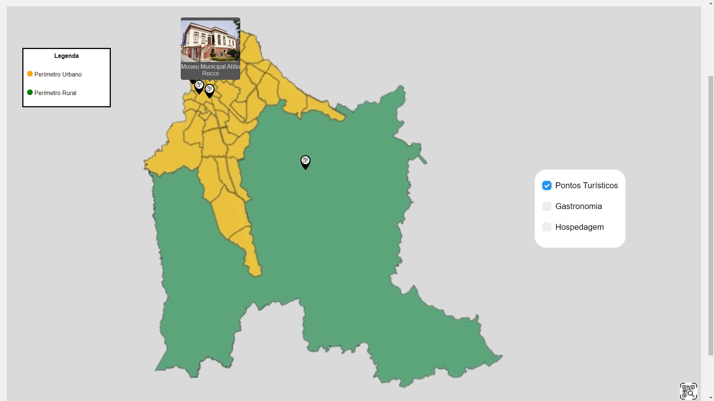
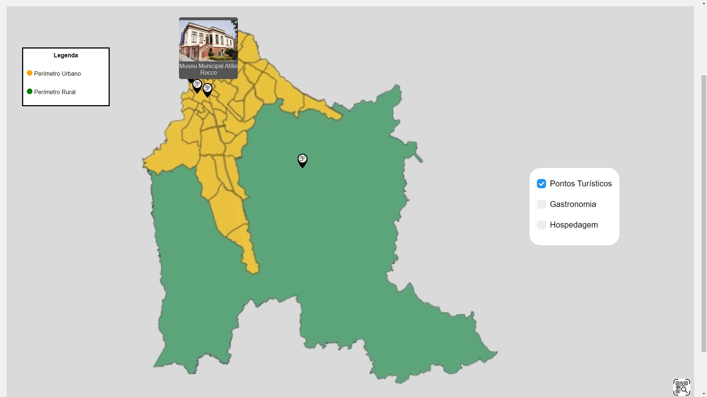
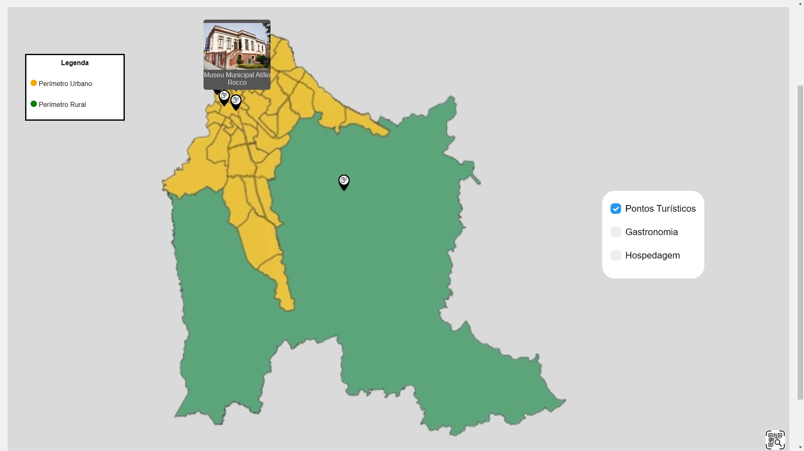

Um site feito para incentivar o turismo em São José dos Pinhais, sendo uma ferramenta para localizar pontos turísticos, hotéis e restaurantes na região.
Uma metodologia aplicada para incentivar o turismo foi o uso de QRCodes, que estariam colocados nos pontos turísticos, e ao serem escaneados contariam a história do local.